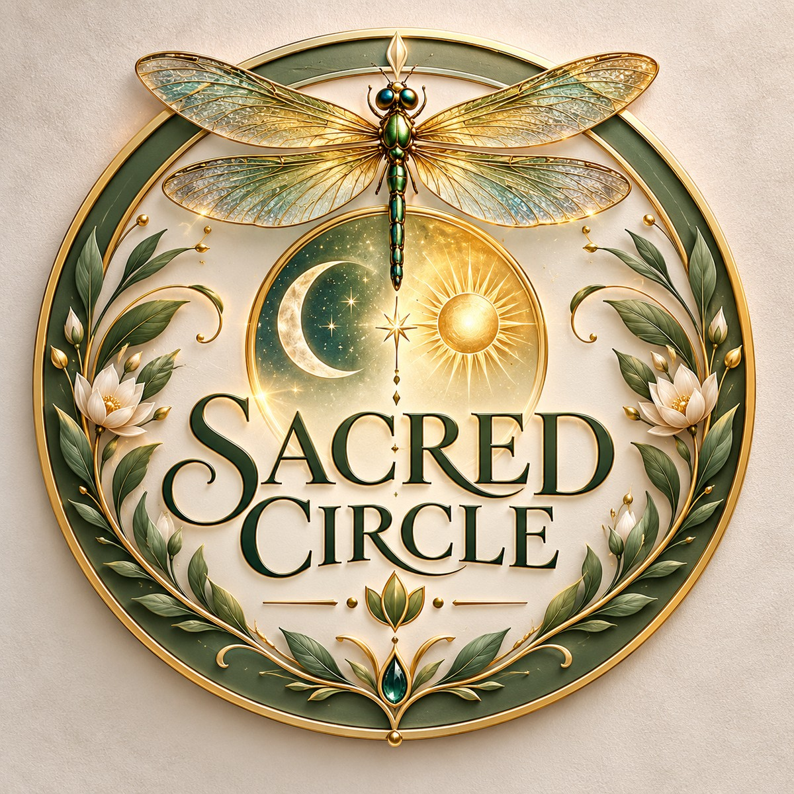

Sacred Circle
A Calgary home for healing, belonging, and discovering who you really are.
Sacred Circle is the umbrella — one shared ground for offerings that sit side by side, each with its own pace and purpose. Not a single clinic, and not a demand that you believe anything in particular. Just a warm Calgary home for adults, families, and kids alike — care, belonging, and room to grow, in person and online where it fits.
About Sacred Circle
One circle, many paths
The main home — not a replacement for the nested pages that live inside it.
Sacred Circle holds the shared header and the front door. Under it, nested businesses keep their own voice and timing: Shadow & Light for trauma-informed Reiki and creative healing; Rainbow Roots for daycare where kids can be themselves; Astrology Discovery for chart-led self-understanding.
You can visit one path today and another later. Nothing here asks you to buy into a whole worldview — only to show up as you are, in Calgary or online when that is the kinder option.
- Care Gentle, clear offerings without hype or pressure.
- Belonging Room for you as you are — seekers, families, and kids finding their footing.
- Room to grow Each path unfolds at its own pace under one roof.
Under one roof
Three paths, one circle
Choose what you need today. Each page stands on its own.
-
Live · Bookable
Shadow & Light Reiki
Trauma-informed Reiki, creative release, and grounding work with Felicia DiGirolamo. Private sessions and small circles — in-person in Calgary or virtual.
Visit full page → -
Intro · Growing
Rainbow Roots
A daycare where kids can be themselves — warm care, room to grow, and a place that honours who they already are.
Read intro → -
Intro · Growing
Astrology Discovery
Understanding who you really are — chart-led reflection for clarity, timing, and a kinder relationship with yourself.
Read intro →
How it works together
Simple on purpose
Sacred Circle stays the shared home. The nested pages do the deep work.
-
Visit one path
Start with Reiki, daycare, or astrology — whichever fits what you need right now.
-
Each has its own page
Full detail, bookings, and intros live on the nested sites, not crammed into this home.
-
Circle stays home
Sacred Circle remains the shared header and front door you can always return to.
When you’re ready
Reiki is live for booking
Shadow & Light is open for private sessions, extended work, and a free 15-minute consult — while Sacred Circle stays the home for every path under the umbrella.